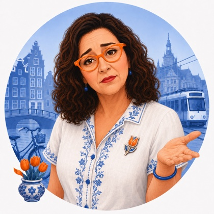

A letter from Tulp de Gid 🌷
Lieve Geltovas, we finally cracked. After the hottest day of the whole summer on Thursday, the sky over here has gone dark and rumbling and wonderfully wet, and for the first time in weeks I opened a window without flinching. It has been that kind of August, one more scorcher, then thunder rolling in off the sea like the country finally exhaling. This week also carried something quieter and heavier, a solemn Saturday morning in the woods just behind your future home, and I want to tell you about that properly rather than rush past it. There is a court ruling that will make you laugh, a doctor's office that has started listening to itself, a field in Flevoland about to fill with a quarter of a million people, and a very old, very patient bull. Come and sit with me, my dears, there is a good deal to get through.
 The big story
The big story
The summer finally breaks
Thursday brought the hottest day of the year, close to 38 degrees down in the southeast, the kind of heat that makes the whole country go quiet and pull its curtains shut. By the weekend the forecast flipped hard, thunderstorms rolling in off the North Sea and the mercury dropping back to a far gentler 19 to 25 degrees, with rain finally reaching ground that had gone properly dry after a summer of heatwaves. The weather people are calling it the moment this year's heatwave officially ended, and you could feel the whole country's shoulders drop a little.
It is the sort of week that reminds you this is a maritime country before anything else. The weather here does not creep in, it arrives, and a single afternoon can swing from beach weather to a proper storm rolling in grey and heavy off the water. Keep an umbrella by the door from here through autumn. You will reach for it far more often than the sunscreen.
Read more: cooler temperatures and rain expected for the rest of August →
 Quick fritters
Quick fritters
The fine in your mailbox might not survive court
Dutch judges have started throwing out a wave of speed camera fines in Sneek, The Hague, North Holland, and Rotterdam, ruling that the cities running the cameras could not prove a public prosecutor had actually approved switching them on. A phone call or a quick email does not count under the law, only a proper formal decision does, the courts have said, and lawyers are now telling cities nationwide to check their paperwork urgently.

Your future doctor might be quietly recording, and that is a good thing
More than a third of Dutch GPs are now letting an AI tool listen in on their consultations, up from about one in seven a year ago, using it to write the patient file afterward instead of scribbling notes while you talk. A national survey found the AI's summaries were often more thorough than the doctor's own, though a touch less careful on the physical exam, and nothing is saved to your file until the doctor reviews and approves it first.

A quarter of a million people are about to vanish into a field
This Friday, Lowlands opens for its three day run at Walibi Holland in Biddinghuizen, twelve stages and more than 250 acts, everything from headline pop and hip hop down to comedy tents and late night science talks. People often call it the Dutch Glastonbury, and for one long weekend a genuine slice of the country disappears into tents and mud and turns up again on Monday, sunburnt and thoroughly pleased with itself.
Dish of the week
Pannenkoeken, the plate that covers the whole table
With the weather finally turning, this felt like the week for pannenkoeken, the big thin Dutch pancake, closer to a French crepe than anything you would call a pancake back home, except it arrives the size of the entire plate. Restaurants called pannenkoekenhuizen exist purely to serve them, with menus running to forty or fifty different toppings, sweet and savory both, bacon and cheese as easily as apple and cinnamon.
The classic version is simplest and best, a plain pannenkoek rolled around a ribbon of stroop, the thick dark syrup that no Dutch pantry ever runs out of. It is proper rainy day food, the kind of dish that turns a grey afternoon indoors into an event, which made this exactly the week for it. Amellia, I suspect, is already at the age where she can be handed a fork and left mostly to her own devices with one of these.
Artwork of the week
The bull that made a whole country stop and look
Paulus Potter was only twenty six when he painted this in 1647, and it startled people the moment it went on view. Nobody had painted an ordinary farm animal at nearly life size before, filling almost the entire canvas with one very patient, very real looking bull, close enough that you can count the flies on his back and the individual hairs of his coat. Painting something this humble on a scale usually reserved for kings and battles was, in its own quiet way, a small act of Dutch rebellion.
Look for the little lark rising in the sky behind him and the farmhand leaning on the fence in the middle distance, easy to miss next to that enormous head. The painting has hung in the Mauritshuis in The Hague for generations, a short walk from where you will all eventually live, and it rewards a slow look far more than a quick photo ever could.
As it happens, his most famous housemate is off traveling. Vermeer's Girl with a Pearl Earring left the building this week for a rare five week loan to a museum in Osaka, her first trip to Asia since 2014 and quite possibly her last for years. The Mauritshuis itself is closing for a stretch of building work while she is away, but this old bull is going nowhere. He will be standing exactly where he always has been once you finally get to see him in person.

The Hague & Scheveningen dispatch
A quiet clearing in the woods you will walk through often
Tucked into the Scheveningse Bosjes, the wooded park that sits between central The Hague and Scheveningen itself, stands the Indies Monument, a tall stone column raised in 1988 to remember the Dutch and Indo-Dutch people who suffered and died under the Japanese occupation of the former Dutch East Indies during the Second World War. It is easy to walk straight past it on an ordinary day, which is rather the point. It waits quietly until the country needs it.
This last Saturday it did. The Netherlands marked 81 years since Japan's surrender with the National Indies Commemoration held right there, Prime Minister Jetten and government ministers laying wreaths for the tens of thousands who died in the internment camps. You will likely pass this monument often once you are settled nearby, on the way to the beach or the woods. It is worth stopping at, at least once, to read what it says. More on this year's commemoration →
🌷 Tulp's Dutch Calendar Radar
Mark a date about a month out
No feast day quite yet, but circle the 15th of September. That is Prinsjesdag, Budget Day, when the king rides in a golden carriage to open the parliamentary year, reads the government's spending plans aloud in a speech called the troonrede, and half of The Hague turns out in its very best hats to watch. It is strange, formal, and rather wonderful theatre, all of it happening a short walk from your own front door one day.
Your first one, next year, will be watched from inside the country instead of on a screen. I intend to make a proper fuss of it when it comes.
"We hebben een mooie nazomer dit jaar." (We are having a lovely late summer this year.)
"Geniet van de nazomer zolang het kan." (Enjoy the late summer warmth while it lasts.)
On the family calendarAnd a glance, before I let you go, at what this little family of ours is up to.
🌷 Tulp's question for the table
Now that the Dutch summer is tipping into rain and the pannenkoeken are coming out, what is one small ritual from an American autumn you would each want to bring along and start doing there instead.
That is the letter, my dears. A heatwave finally broken by thunder, a quiet monument in the trees worth a slow visit, a fine that might not survive its own paperwork, a doctor listening more carefully than she is typing, a quarter of a million people about to vanish into a field in Flevoland, and one very old, very patient bull who is going absolutely nowhere.
Wrap up a little for the rain this week, all of you, and enjoy your call.
Hou vol, which is our way of saying hang in there, keep going. Liefs, Tulp.
Liefs, Tulp 🌷Tulp's parting shot
A shelf of storm cloud rolling in over the city, the kind of sky that means business here. The Netherlands does not really do subtle skies, not at the height of summer and not on the way out of it either. We are keeping the view warm for you.